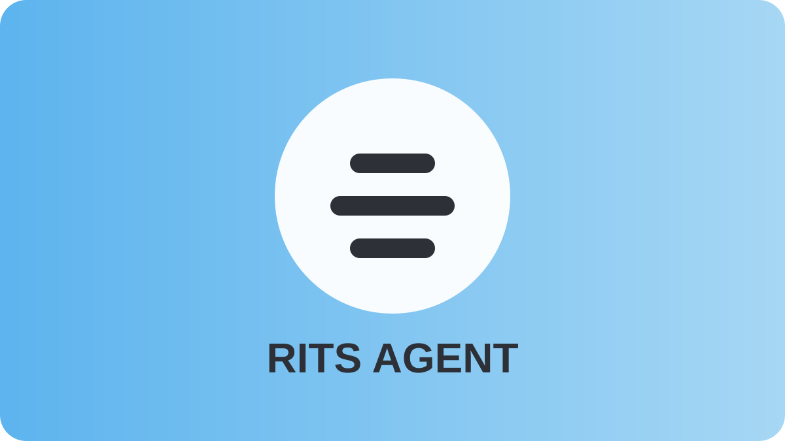

Мы протестировали RITS Agent — и вот что выяснили
Мы сравнили работу агента мониторинга с загрузкой системы и обнаружили интересный эффект. Пик потребления ресурсов составил всего 10%. Даже при максимальной загрузке оборудования агент не перегружает систему — он работает мягко и незаметно.
Подробнее